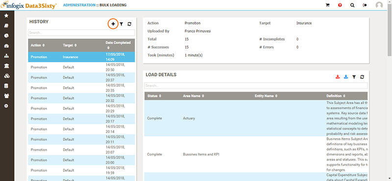
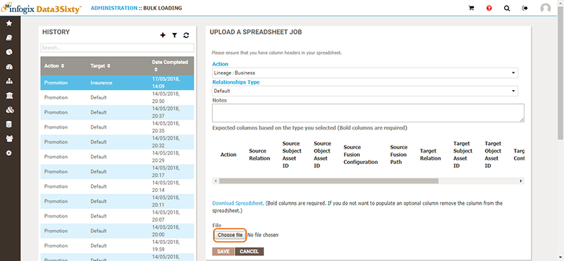

Business lineage can be built in Infogix Data3Sixty between any artifacts that are defined in the glossary.
Note: In order to create lineage mapping, you must have already created relationship types for the items that will be linked together, see Establishing relationships.
There are two ways to load business lineage in Infogix Data3Sixty:
[TO DO: Need a sub-topic with more info on Markit EDM connector]

On the Bulk Loading screen, click Choose File, then select the populated spreadsheet to upload:

You can monitor the Bulk Load request by selecting your request in the History pane and viewing the associated information in the Load Details window.
If the request completes successfully, the mappings which have been loaded into Infogix Data3Sixty will be displayed. If there are failures, you can scroll over the errors list to read more information regarding the failed mappings.
For an introduction to lineage, see Inspecting lineage.
The Business Lineage spreadsheet is comprised of three sections; action, source and target:
Each of the source and target sections have components that represent the assets. In the example above, a business term on the "Per Security" data license is being mapped into a target application / Business Term, namely Markit EDM and "Country of Risk".
If there is no existing relationship between Per Security and Country of Risk, then Infogix Data3Sixty will create the relationship to complete the source part of the mapping. The same scenario applies to the target section, the system will create the relationship between Markit EDM and Country of Risk, if it does not already exist.
To create the lineage relationships, you need to populate the spreadsheet.
| Column title | Description |
|---|---|
| Action | Add or remove existing lineage. |
| Source Relation | Select the Relationship Type on which you want to base the source mapping, e.g. Per Security Provides Country of Risk. In this example, Per Security (license service) is the subject, Provides is the predicate and Country of Risk (business term) is the object. |
| Source Subject | The value of the subject part of the lineage map. In the example above, the source subject value would be the Per Security license service. |
| Source Object | The value of the object part of the lineage map. In the example above, the source object value would be the Country of Risk business term. |
| Source Fusion Configuration (optional) | Optionally, you can map Fusion technical metadata as part of the lineage build process. Enter the fusion configuration name. For the Per Security example, a possible fusion configuration could be Bloomberg Data Dictionary. |
| Source Fusion Path (optional) | The path to the fused item. This could be a schema.Table.Column that represents a database property or a field name from a file. |
| Target Relation | Select a Relationship Type on which you want to base the target mapping. |
| Target Subject | The value of the subject part of the target map. In the example above, the target subject value would be the Per Security license service. |
| Target Object | The value of the object part of the target map. In the example above, the target subject value would be the Country of Risk business term. |
| Target Fusion Configuration (optional) | Optionally, you can map Fusion technical metadata as part of the lineage build process. Enter the fusion configuration name. For the Markit EDM example, a possible fusion configuration could be Markit EDM Data Dictionary. |
| Target Fusion Path (optional) | The path to the fused item. This could be a schema.Table.Column that represents a database property or a field name from a file. |
| Transformation | Provide any transformations that are applied as part of the source to target mapping. These will be displayed in the lineage diagram. |